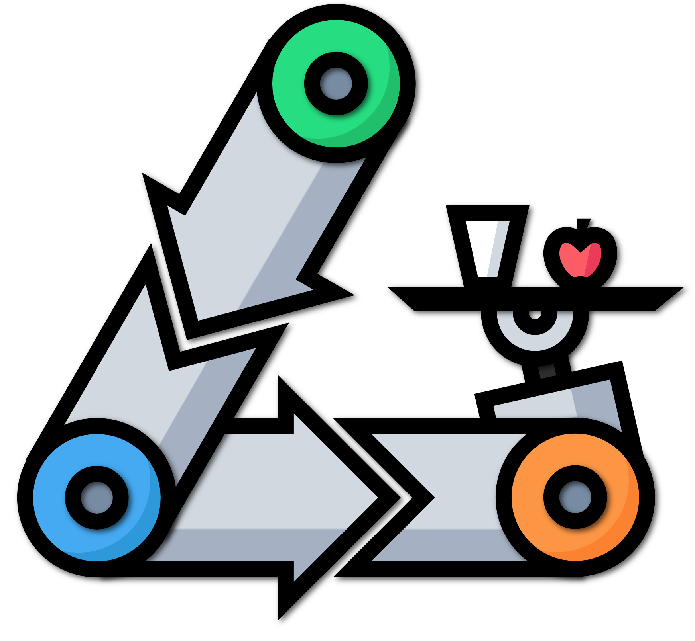

<link rel="import" href="../bower_components/app-layout/app-header/app-header.html">
<link rel="import" href="../bower_components/app-layout/app-header-layout/app-header-layout.html">
<link rel="import" href="../bower_components/app-layout/app-scroll-effects/app-scroll-effects.html">
<link rel="import" href="../bower_components/app-layout/app-toolbar/app-toolbar.html">

<link rel="import" href="../bower_components/app-route/app-location.html">
<link rel="import" href="../bower_components/app-route/app-route.html">

<link rel="import" href="../bower_components/iron-pages/iron-pages.html">
<link rel="import" href="../bower_components/iron-selector/iron-selector.html">

<link rel="import" href="../bower_components/polymer/polymer.html">

<link rel="import" href="recycle-ui-map-control.html">
<link rel="import" href="recycle-ui-class-control.html">
<link rel="import" href="recycle-ui-add-control.html">

<dom-module id="recycle-ui-app">
  <template>
    <style>
      :host {
        font-family: sans-serif;
        --primary-color: #1F7A8C;
      }

      app-header-layout iron-pages {
        min-height: 100%;
        height: 100%;
      }

      app-header {
        background-color: var(--primary-color);
        color: #fff;
        font-size: 1.7em;
      }

      #logo {
        height: 40px;
        weight: 40px;
      }

      #title {
        margin-left: 15px;
      }

      #links > a {
        text-decoration: none;
        color: white;
        font-size: 16px;
        margin: 0px 5px;

      }

      .nav-menu > a {
        display: block;
        padding: 12px 16px;
        font-size: 20px;
        font-weight: 500;
        text-decoration: none;
        color: black;
      }

      .nav-menu > a:focus {
        outline: none;
      }

      .nav-menu > a.iron-selected {
        background-color: var(--paper-grey-300);
      }
    </style>

    <!-- app-location binds to the app's url -->
    <app-location route="{{route}}"></app-location>

    <!-- this app-route manages the top-level routes -->
    <app-route
        route="{{route}}"
        pattern="/:view"
        data="{{routeData}}"
        tail="{{subRoute}}"></app-route>

      <app-header-layout fullbleed>
        <app-header slot="header" reveals effects="waterfall">
          <app-toolbar>
            
            <div id="title" main-title>Recyclo-bot</div>
            <div id="links">
                <a href="/map">View Map</a> /
                <a href="/classifications">View Classficiations</a> /
                <a href="/add">Add Item</a>
            </div>
          </app-toolbar>
        </app-header>


        <!-- Load view based on route -->
        <iron-pages selected="[[routeData.view]]" attr-for-selected="name" fallback-selection="map">
          <recycle-ui-class-control name="classifications" route="{{subRoute}}"></recycle-ui-class-control>
          <!--<recycle-ui-map-control name="map" route="{{subRoute}}"></recycle-ui-map-control>-->
          <recycle-ui-add-control name="add" route="{{subRoute}}"></recycle-ui-add-control>
        </iron-pages>
      </app-header-layout>

  </template>
  <script>
    /**
     * @customElement
     * @polymer
     */
    class RecycleUiApp extends Polymer.Element {
      static get is() { return 'recycle-ui-app'; }
      static get properties() {
        return {
          prop1: {
            type: String,
            value: 'recycle-ui-app'
          },
          route: Object,
          routeData: {
            type: Object,
            value: {
              view: 'map'
            }
          },
          subRoute: Object
        };
      }

      _drawerSelected() {
        console.log("what", this.$.drawer);
        if (!this.$.drawer.persistent) this.$.drawer.close();
      }
    }

    window.customElements.define(RecycleUiApp.is, RecycleUiApp);
  </script>
</dom-module>
